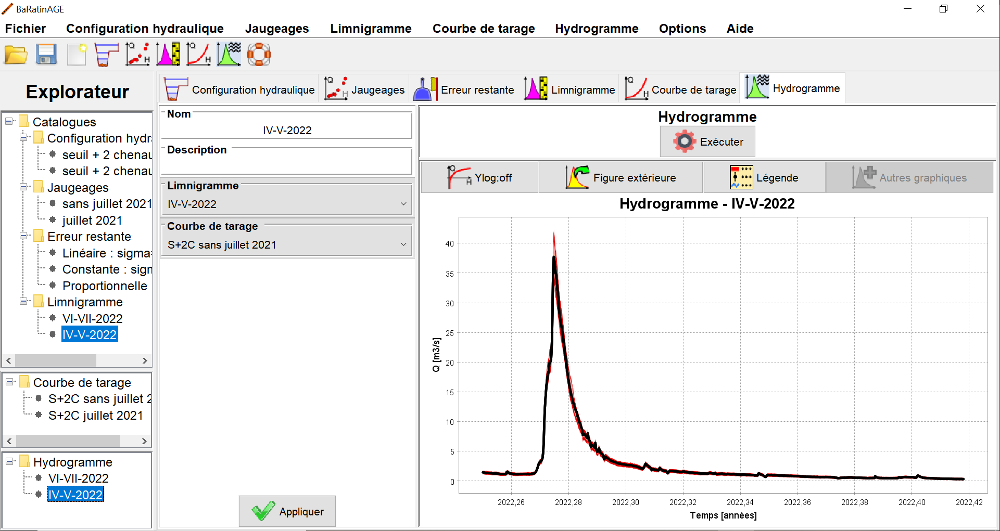
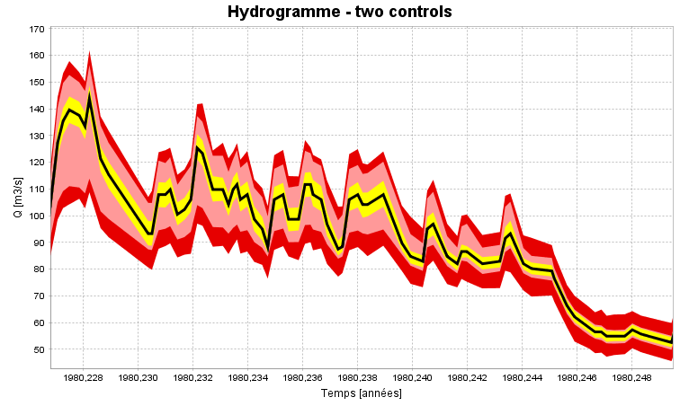

Vous pouvez créer un nouvel hydrogramme de plusieurs façons :
Il vous sera demandé de nommer ce nouvel hydrogramme, et vous pouvez en saisir une description. La spécification des propriétés de l'hydrogramme se fait alors en sélectionnant :
Vous êtes à présent prêts à lancer le calcul de l'hydrogramme, en cliquant sur le bouton Exécuter. A l'issue du calcul, le panneau se met à jour comme ceci :

Note 1 : Le temps de calcul à cette étape peut être important, et il est principalement gouverné par le nombre de pas de temps que contient le limnigramme. En guise d'ordre de grandeur, il faut s'attendre à un temps de calcul de l'ordre de la minute pour un limnigramme contenant 10 000 pas de temps. Ceci est dû au mode de calcul utilisé par BaRatinAGE pour l'estimation des incertitudes. En effet, pour calculer les intervalles d'incertitudes autour de l'hydrogramme, ce sont plusieurs centaines d'hydrogrammes qui sont en fait calculés, en propageant à la fois les incertitudes du limnigramme et celles liées à l'estimation de la courbe de tarage (approche spaghetti). Pour plus de détails sur ce calcul, vous pouvez consulter ce document).
Note 2 : Pour économiser de l'espace mémoire et du temps de calcul, par défaut les spaghetti d'hydrogrammes calculés ne sont pas sauvegardés. Si vous souhaitez les enregistrer, allez dans Options...Options de sauvegarde, sélectionnez "oui", "Appliquer" et redémarrez BaRatinAGE. A partir de maintenant, les spaghetti d'hydrogrammes seront sauvegardés dans le fichier bar.zip chaque fois que vous calculez un hydrogamme dans BaRatinAGE. Vous les trouverez dans le sous-dossier "Hydrograph", sous les noms de spagH.txt (incertitude due aux seules erreurs du limnigramme), spagHParam.txt (erreurs du limnigramme + incertitude paramétrique de la courbe de tarage), spagTotal.txt (erreurs du limnigramme + incertitude paramétrique de la courbe de tarage + erreurs restantes). Attention cependant: les fichiers créés peuvent être très volumineux, ce qui peut ralentir l'ouverture et la sauvegarde du fichier bar.zip.
En zoomant dans le panneau graphique, on voit apparaître plusieurs intervalles d'incertitude autour de l'hydrogramme calculé, comme représenté ci-dessous :

Les éléments de ce graphique doivent être interprétés comme ceci :